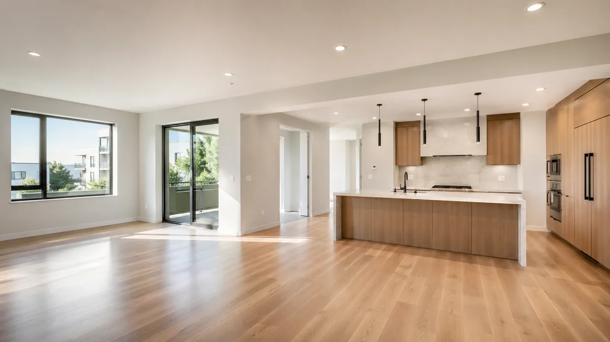

Turnover cleaning is built for the next tenant.
The focus is vacancy, residue, appliance options, bathroom detail, floors, and the handoff standard.
APARTMENT TURNOVER · NORTH NJ
Vacant units, landlords, property managers, move-out residue, kitchens, bathrooms, floors, and tenant-ready handoff.
Plan this service →Personalized scope · No obligation

THE WORK, EXPLAINED
These are service focus areas, not a universal promise. Exact inclusions depend on the property and your accepted quote.
The focus is vacancy, residue, appliance options, bathroom detail, floors, and the handoff standard.
Clear scope helps turnover timing stay organized.
The unit should feel ready before keys change hands.
Rooms, floors, surfaces, and touchpoints are cleaned for turnover.
Counters, sinks, appliance fronts, and cabinet add-ons are handled by scope.
Fixtures, toilets, mirrors, tubs, sinks, and floors receive focused attention.
High-use areas and tenant residue are handled before the next occupant.
HELP US QUOTE THE RIGHT WORK
THE PURELUX PROJECT GALLERY
Explore original project photos, before-and-after details, and their documented locations in one place.
BEFORE YOU REQUEST
Yes. Apartment turnover cleaning is built for rental units and move-ready resets.
Inside appliances and cabinets are optional add-ons quoted before service.
Yes. Scope and timing depend on unit count, condition, and availability.
Send unit size, vacancy status, condition, photos if available, and timing.
CLEAR SCOPE BEFORE COMMITMENT
Share the details that shape a useful quote. Review your scope and pricing before approving anything.
CONNECTED CARE
A fresh baseline. Care for the details.
EXPLORE SERVICE →A cleaner rhythm. Week after week.
EXPLORE SERVICE →A careful clean. A better handoff.